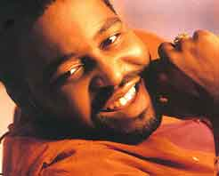

In memory of Gerald Levert
Stevie Wonder's sadness over fate of irreversibly of great friends, artists and family have been a constant in recent years. Just remember unexpected death of his
mother, his brother, or his ex-wife
Syreeta. Colleagues as
Michael Jackson,
Whitney Houston,
Pavarotti or
Luther Vandross, have tried to penetrate and bind with a clammy fog the heart of Stevie Wonder.
Stevie has always expressed the best way he knows hisr love and memories. Emotional man and full of tenderness, his voice and his music is the channel through which pass the invisible threads of affection and love.
This way we can infect the emotion of one of those moments that would not have happened, his presence alongside
Eddie Levert -components of the O'Jays- remembering his son
Gerald Levert.
Also great singer, died on 10 November 2006 with just 40 years of age. His physical disappearance brings out those moments where the magic of the music is converted back into the transmission medium of the deepest feelings. A shocked Stevie Wonder plays with the heart a beautiful song belonging to his 1980 album
"Hotter Than July". Is the song "All I Do" -composed by Stevie in the 60'- making transmission chain heartbreaking lament for the death of a friend, and the pain of a father facing one of the worst times that may have, the death of a son.

You can feel and touch the emotions, you can feel the soul of Gerald Levert resting in peace, knowing that there are people in the world who love and feel his disappearance, which is a process comprising more than life, and without it many things would cease to have meaning. Sometimes life is too short ... but why not leave a residue prevents indelible of love in the hearts of all us, thanks mainly to the memory of his performances, as was the day that pays tribute to Stevie at the BET Walk of Fame. His unforgettable voice and presence performing also "All I Do".


Letra All I Do
You made my soul a burning fire
You're getting to be my one desire
You're getting to be all that matters to me
And let me tell you girl
I hope and pray each day I live
A little more love I'll have to give
A little more love that's devoted and true
'Cause all I do is think about you
All I do
Oh baby
Is think about you
Think about you baby
All I do
m-m-m-m
Is think about you
Baby just suppose I should happen to cross your mind
And by some chance a boy like me you're really been trying to find
Well let me tell you girl
Think of how exciting it would be
If you should discover you feel like me
If you should discover this dream is for two
We'll I'm gonna tell you girl
I'd light a candle every day
And pray that you'll always feel this way
And pray that our love will forever be new
'Cause all I do is think about you
All I do
Oh baby
Is think about you
I think about you
All I do
Yeah, baby
Is think about you
Gonna tell you girl
I'd light a candle every day
And pray that you'll always feel this way
And pray that our love will forever be new
I'm gonna tell you girl
If I cannot have you for my own
I'd rather be lonely and all alone
I'd rather keep thinking the way that I do
'Cause all I do is think about you
All I do
- Oh baby
Is think about you
- Think about you baby
All I do
- Ou Oh baby
Is think about you
- I think about you baby
All I do
- Yeah baby
Is think about you
- Think about you baby,
All I do
- baby, baby, baby, baby, baby
Is think about you
- All I do is think about you baby
All I do
Is think about you
- I think about cha baby
All I do
- Yeah, yeah, yeah, yeah
Is think about you
- Oh baby, baby, baby
I'm thinking baby
'bout you baby
I'm thinking baby
'bout you baby
I'm thinking baby
'give it to me baby
I'm thinking baby
- I'm thinking, thinking, yeah, yeah,
'bout you baby
yeah, yeah, yeah, yeah, yeah get on down
All I do
Gotta get on down
Is think about you
- Whoa Whoa Whoa get on down
All I do
- All I do is think about you baby
Is think about you
- I think about you baby
All I do
- Oh baby
Is think about you
- Can you feel can you feel can feel
All I do
- the fire burning can't you feel the birds humming
Is think about you
- Think about you baby, oh oh
All I do
- Can't you feel my love flowing Can't you see my love growing
Is think about you
- Oh
All I do is think about you
Home |
Biography |
Discography |
Videos |
Songs |
Grammys |
Top ten
steviewonder.es ® is a registered trademark. All content © 2008-2021 by izugarria.
All contents of the site including, images, video, names, trademarks & logos, are property of their respective owners.